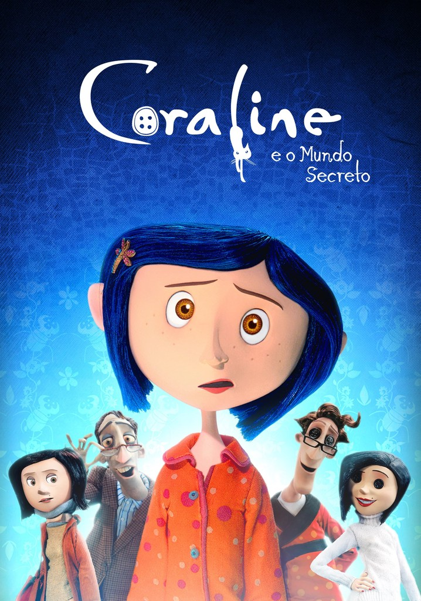

Enquanto explora sua nova casa à noite, a pequena Coraline descobre uma porta secreta que contém um mundo parecido com o dela, porém melhor em muitas maneiras.
Todos têm botões no lugar dos olhos, os pais são carinhosos e os sonhos de Coraline viram realidade por lá.
Ela se encanta com essa descoberta, mas logo percebe que segredos estranhos estão em ação: uma outra mãe e o resto de sua família tentam mantê-la eternamente nesse mundo paralelo.